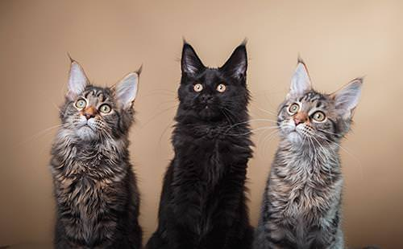
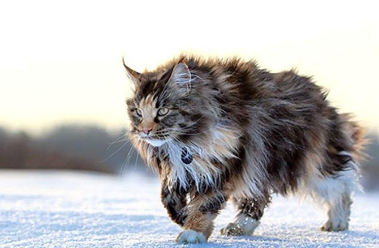

Мейн кун, Мейнська єнотова ( англ. Maine coon, МСО) — порода кішок, родом зі штату Мен США , де вони жили на волі й добре пристосувалися до несприятливих погодних умов.
Історія
Мейн-кун витривала й невибаглива порода, за що й стали улюбленицями моряків. Походження їх невідоме. Імовірно, вони з'явилися від схрещування місцевих короткошерстих і завезених торговцями з Малої Азії довгошерстих кішок. Свою назву одержали завдяки місцю походження, а також, можливо, завдяки звичкам і зовнішній подібності з єнотом. Багато кішок цієї породи було представлено на першій виставці в Нью-Йорку в 1860 році. У 1953 році був утворений Клуб любителів мейнських єнотових кішок, що займався популяризацією і організацією виставок цієї породи. Стандарт породи більшістю клубів та об'єднань визнаний у 1983 році. Сьогодні мейнські кішки добре відомі й розводяться в багатьох країнах.
Розмноження
Зазвичай народжують кошенят раз на рік. У потомстві спостерігається велика розмаїтість забарвлення. Кошенята народжуються великими, міцними. Розвиваються протягом тривалого часу. Формування дорослої особи займає до чотирьох років.
ПРОСТО ДЛЯ ПРАКТИКУВАННЯ
Характер
Мейн кунів люблять багато кошатників не тільки завдяки їх габаритам. Ці кішки володіють хорошим характером і чудово ставляться до всіх членів сім’ї. Вони відмінно уживаються з іншими вихованцями в будинку (навіть з собаками). Мейн-куни не можуть бути агресивними, але до чужинців вони придивляються. Для них є чіткий поділ на своїх і чужих.
Характер у американської породи доброзичливий і спокійний. Вони люблять багато спати в будинку, але більше – на свіжому повітрі, незалежно від погоди. Але незважаючи на це, як тільки господар пропонуємо кішці гру, вихованець відгукується з радістю.
Заводчики мейн-кунів часто відзначають високий інтелект у тварини. Кішки добре знають межі дозволеного:
- знають, куди ходити в туалет і відвідують тільки потрібне місце в будинку або вулицю (по можливості);
- не псують меблі в будинку, коли потрібно точити кігті;
- ніколи не крадуть зі столу їжу;
- не настирливі, не кричать, якщо хочуть їсти або ще чогось.
Дані кішки зовсім не бояться води. Вони з задоволенням опустять лапку в ванну, наповнену рідиною. І якщо вже господар запропонує скупатися – мейн куни не будуть проти.
Зовнішній вигляд

Мейнська єнотова — кішка середнього, а часом і великого розміру, міцної будови. Протягом тривалого часу мейнська єнотова кішка вважалася найбільшою кішкою[1], однак величина її наближається до розмірів персів. Маса самців — 6-9 кг (іноді і більше), кішок — 4-7 кг. Справляє враження сильної, кремезної кішки. Кішки значно дрібніші, ніж коти. Тіло довге, мускулясте, прямокутного формату, із широкою грудною кліткою. Спина рівна, пряма. Ноги сильні, мускулясті, широко розставлені, досить довгі, пропорційні щодо тіла. Лапи великі, круглі, з пасмами волосся між пальцями (до 5 см). Хвіст довгий (дорівнює довжині тіла), широкий біля основи, звужений до кінця, без зламів. Вкритий довгою шерстю (у вигляді страусового пера). У піднятому стані не пухнастий. Кінець хвоста тупий.
Голова середньої довжини й середньої ширини із квадратною мордочкою, невелика стосовно тулуба. У кішок старшого віку допускається ширша морда. Вилиці високі. Підборіддя сильне, не повинне виступати (знаходиться на одній вертикальній лінії з кінчиком носа). Надає голові квадратної форми. Ніс короткий, із плавним переходом від чола до морди, з невеликою сіделкою. Вуха великі, широкі біля основи, звужені й загострені, зі щетинками («китицями») на кінцях, високо й трохи навскіс посаджені, широко розставлені. Відстань від кінчиків вух до кінчика носа така ж, як від кінчика носа до його основи. Очі великі, круглі, виразні, широко розставлені, трохи косо посаджені, але не так, як у східних кішок. Колір очей може бути різним. Шия міцна, середньої довжини. У котів більш мускуляста, через що здається коротшою, ніж у кішок.
Шерсть густа, кошлата, важка, гладка, блискуча. Коротша й густіша на
голові, плечах і довша на животі й задніх кінцівках, де утворює довге
пухнасте галіфе. За довжиною шерсті на голові мейнкуни займають
проміжне положення між кішками перської та сіамської породи. Можна
сказати, що ця порода майже короткошерста спереду й довгошерста ззаду.
Комір на шиї бажаний, але не обов'язковий. Підшерстя ніжне, м'яке,
легке. Текстура шерсті шовковиста, м'яка, спадаюча. Довжина шерсті
змінюється залежно від пори року й клімату. У країнах з теплим
кліматом шерсть стає коротшою.
Забарвлення
Допускаються всі різновиди забарвлення, а також їхні поєднання (з білим,та інші), крім колорпоінт. За забарвленням породу поділяють на два класи: з агуті-фактором і без агуті-фактора. Кішки в поєднанні з білим, який займає одну третю тіла, повинні мати повністю білі кінцівки, живіт, груди, шию та мітки на мордочці. Колір очей зелений, жовто-зелений, золотавий (жовтий), кольору міді, помаранчевий насичений, не залежить від забарвлення. Кішки з білим забарвленням можуть мати блакитний колір очей або різнобарвні очі.
Догляд за мейн-куном
Коли кошеня мейн-кун з’являється в будинку, необхідно підготувати йому місце і подбати про наступне:
- Заздалегідь придбати коту лежанку. Але варто відразу врахувати, що подорослішавший кіт стане досить довгим. У такому випадку йому підійде просторе ложе, розміром – 90 на 60. Також, власник може спробувати спорудити вихованцеві лежанку своїми силами, використовуючи синтепон, вату, поролон і тканину.
- Краще купувати для мейн куна просторий лоток. Але кошеняті лоток з високими бортикам не підійде. І на першому етапі можна купити невелику ємність.
- Вибір наповнювача потрібно уточнювати у продавця кота. Кіт ходитиме лише на той пісок або гранули, на які був привчений ходити з мамою.
- Обов’язково варто купити кігтеточку, не відкладаючи. Для представників цієї великої породи варто брати високу кігтеточку.
-
Іграшки вибирають тільки безпечні для кота: м’які м’ячики і мишки,
без додаткових деталей
(гудзичків, пір’я, намистин і іншого). Інакше кіт може вдавитися дрібною деталлю. - Мейн кунам купують місткі миски зі скла, сталі або кераміки. Такий посуд найбезпечніший з гігієнічних міркувань.
Мейн-куни обов’язково повинні дихати свіжим повітрям. Тому частіше вигулюйте котів на відкритій території, якщо ви мешкаєте в котеджі або на дачі з обгородженою ділянкою. Або хоча б відкривайте для нього вікно, попередньо прикрите сіткою. Так кіт зможе сидіти на підвіконні кімнати або балкона і отримувати необхідний кисень.
Також для мешканців міських квартир можна купити спеціальні
шлейки-поводок
і знайти безпечну зону для вигулу мейн куна. Але
важливо пам’ятати, що відвідування вулиці для цієї кішки можливо,
тільки якщо їй заздалегідь були зроблені всі необхідні щеплення.